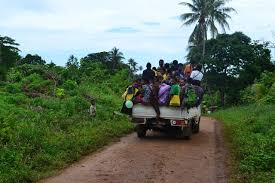
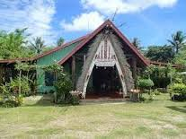
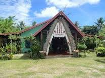

How to Get to Losuia (main Township of Kiriwina-Goodenough District)

 

Vans, PMVs (public motor vehicles) and small boats transport visitors to villages around the
island and to some of the neighbouring Trobriand Islands. These modes of transport can be taken from
town close to the tender pier. Getting transport out of villages can be difficult, especially if not
arranged beforehand since most transport is tied in with local accommodation providers.
If you are hiring, expect to pay around aroung 50-100 PGK each way for a van ride to and from the airport, or 100-200 PGK
from one side of the island to the other. Van rides include a complimentary guided tour of some of the island’s major
beaches, including kaibola, mweuya, wewela beaches.
Travel times from the port:
- On Foot
- -This is the only public function Calendar has. This function basically calls each private function below to create the HTML calendar interface.
The basic idea of creating a web calendar is that, firstly it determines how many rows(weeks)
to create, and then it loops over the rows and create 7 cells on each row.
Meanwhile it puts corresponding day value to the cell according to the day of week
(Monday to Sunday).
- Van/PMV:
- It is a 40 minute journey between Losuia and Kiabola. And another hour's journey from Losuia to Gilibwa
(the another end of the mainland Kiriwina.
- On Air
- It is a 15 minute journey between Losuia Township and Kiriwina Airport (Officially called LOSUIA AIRPORT), which has three scheduled
flights to Port MOresby via Alotau (Gurney) per week. Go to PNG Air
for more information on the weekly schedule flights to LOSUIA.
- Some Highlights:
-
- Trobriand Cricket -
- Played in the middle of town with what seems like half the village taking part,
observe the cultural spectacle of the Trobriand form of cricket. With play stopped intermittently
for singing, ceremonial dancing and whistleblowing, expect to wait hours if not days for your turn
to bat – it’s all part of the fun of enjoying the organised chaos.
- Kiriwina Village Tours -
- Receive a guided tour of the humble homes of the local villagers, many of
which are surrounded by taro, yam and banana plots. Visit the Paramount Chief’s large house in the
centre of mainland Kiriwina, bringing gifts including postcards from home, fish hooks or candy, while asking to see the
sought after kula objects that have been traded. Tours cost 20 PGK (around $4) and leave from the visitor
information centre next to the jetty.
- Yam Harvest Festivals -
- The festivals happen arround June & July every year, where the typical trobriand
Islands villagers celebrate their yam harvest by feasting, dancing, etc.. There are many many activities
that a local tourist would not want to miss it. The real trobriand culture is normally displayed during the period.